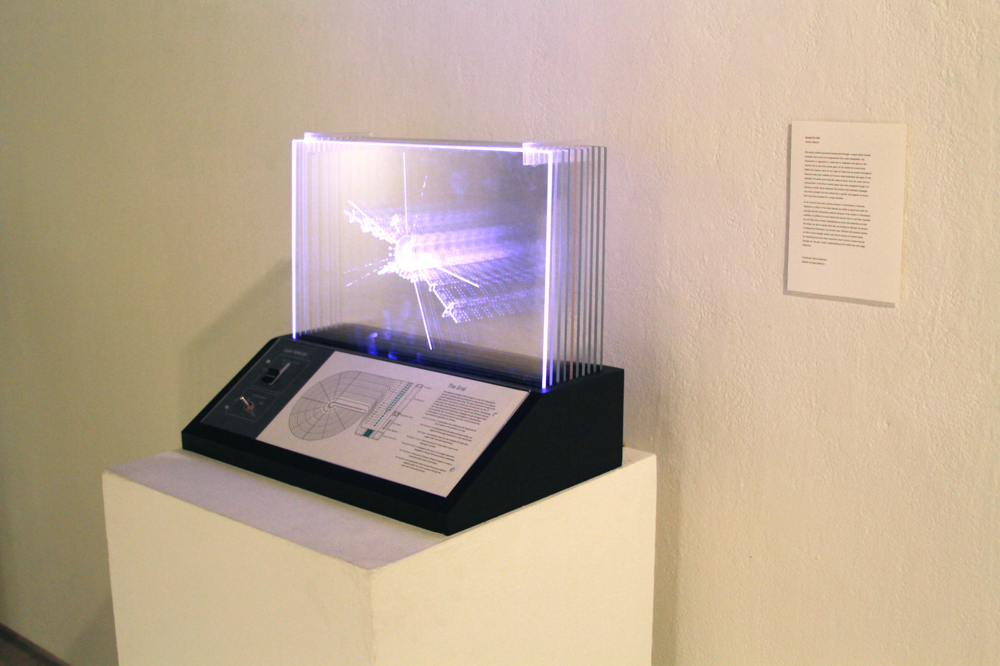

Overview
Beyond the Fold is a project to visualize a user's path while browsing the web. It consists of two software components and one hardware:
- A voluntarily installed web extension to monitor a user's relative position
- A visualizing tool that can be used to import the graph from local-storage.
- A device that has lights allowing the end user to highlight a slice of time.
The initial end product was intended to be a physical manifestation of the paths through time. It was conceived by Andrew Doherty for his graphic design thesis.
Each pane of acrylic has a polar coordinate graph containing the path of one's website visits. The full circumference of the graph represents 6 hours of browsing in this example but can be adjusted in the source.
- Each circular node is a new page visit.
- Each diamond node is a page visit reached via a search.
- Each connecting line or edge between nodes represents visiting a link from another page.
- Each tab is divided by a separating line.
Monitor
The monitor tracks:
- Duration of a page visit.
- The parent/child relationship between websites.
- The uniqueness of a page visit.
- Whether the page was reached via. a web search.
Usage
To install and use the browsing monitor you need Safari and developer tools installed. One cannot distribute self-signed web extensions and getting Apple to sign this particular extension may be difficult due to perceived invasiveness.
After ensuring developer tools are installed open Safari and execute the following steps:
- Clone the project.
- Go to Develop -> Show Extension Builder.
- Click the plus sign in the bottom left corner to add an extension.
- Select Add Extension.
- Select the directory in the cloned project called `Browsing-Monitor.safariextension`.
The browsing monitor is now active and will automatically track you. This data is being pushed to the SQLite database in Safari's localstorage.
Visualizer
The visualization tool was constructed in a way such that visible page visit's (indicated by a node) can be filtered out by the duration of that visit.
Usage
Install the newest version of processing and open `Visualisation/visualization/visualization.pde`. The graph should be generated based on the data in your Safari localstorage.
Device
The final device consisted of an Arduino, LED strips, a sliding potentiometer, and a three state switch.
- Isolate a single slice.
- Build or highlight all slices up to a selected slice.